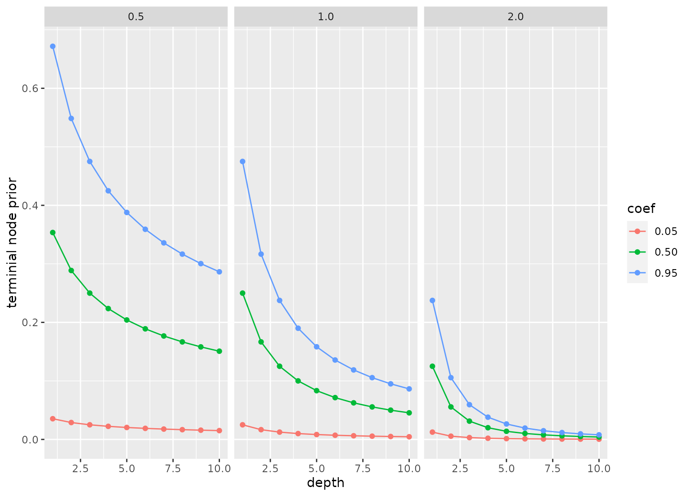

bart() defines a tree ensemble model that uses Bayesian analysis to
assemble the ensemble. This function can fit classification and regression
models.
There are different ways to fit this model, and the method of estimation is chosen by setting the model engine. The engine-specific pages for this model are listed below.
¹ The default engine.More information on how parsnip is used for modeling is at https://www.tidymodels.org/.
Usage
bart(
mode = "unknown",
engine = "dbarts",
trees = NULL,
prior_terminal_node_coef = NULL,
prior_terminal_node_expo = NULL,
prior_outcome_range = NULL
)Arguments
- mode
A single character string for the prediction outcome mode. Possible values for this model are "unknown", "regression", or "classification".
- engine
A single character string specifying what computational engine to use for fitting.
- trees
An integer for the number of trees contained in the ensemble.
- prior_terminal_node_coef
A coefficient for the prior probability that a node is a terminal node. Values are usually between 0 and one with a default of 0.95. This affects the baseline probability; smaller numbers make the probabilities larger overall. See Details below.
- prior_terminal_node_expo
An exponent in the prior probability that a node is a terminal node. Values are usually non-negative with a default of 2 This affects the rate that the prior probability decreases as the depth of the tree increases. Larger values make deeper trees less likely.
- prior_outcome_range
A positive value that defines the width of a prior that the predicted outcome is within a certain range. For regression it is related to the observed range of the data; the prior is the number of standard deviations of a Gaussian distribution defined by the observed range of the data. For classification, it is defined as the range of +/-3 (assumed to be on the logit scale). The default value is 2.
Details
The prior for the terminal node probability is expressed as
prior = a * (1 + d)^(-b) where d is the depth of the node, a is
prior_terminal_node_coef and b is prior_terminal_node_expo. See the
Examples section below for an example graph of the prior probability of a
terminal node for different values of these parameters.
This function only defines what type of model is being fit. Once an engine
is specified, the method to fit the model is also defined. See
set_engine() for more on setting the engine, including how to set engine
arguments.
The model is not trained or fit until the fit() function is used
with the data.
Each of the arguments in this function other than mode and engine are
captured as quosures. To pass values
programmatically, use the injection operator like so:
value <- 1
bart(argument = !!value)Examples
show_engines("bart")
#> # A tibble: 2 × 2
#> engine mode
#> <chr> <chr>
#> 1 dbarts classification
#> 2 dbarts regression
bart(mode = "regression", trees = 5)
#> BART Model Specification (regression)
#>
#> Main Arguments:
#> trees = 5
#>
#> Computational engine: dbarts
#>
# ------------------------------------------------------------------------------
# Examples for terminal node prior
library(ggplot2)
library(dplyr)
#>
#> Attaching package: ‘dplyr’
#> The following objects are masked from ‘package:stats’:
#>
#> filter, lag
#> The following objects are masked from ‘package:base’:
#>
#> intersect, setdiff, setequal, union
prior_test <- function(coef = 0.95, expo = 2, depths = 1:10) {
tidyr::crossing(coef = coef, expo = expo, depth = depths) %>%
mutate(
`terminial node prior` = coef * (1 + depth)^(-expo),
coef = format(coef),
expo = format(expo))
}
prior_test(coef = c(0.05, 0.5, .95), expo = c(1/2, 1, 2)) %>%
ggplot(aes(depth, `terminial node prior`, col = coef)) +
geom_line() +
geom_point() +
facet_wrap(~ expo)
